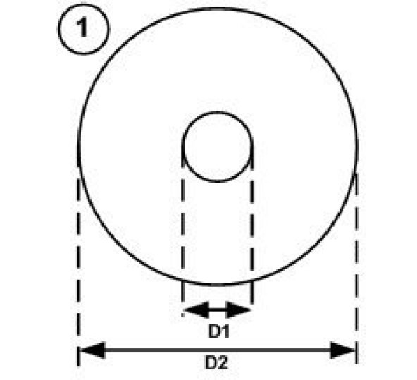
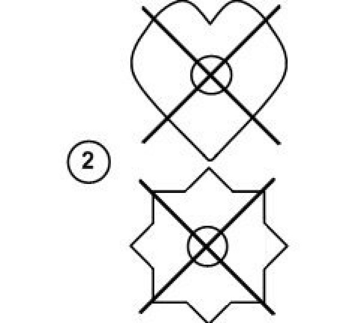
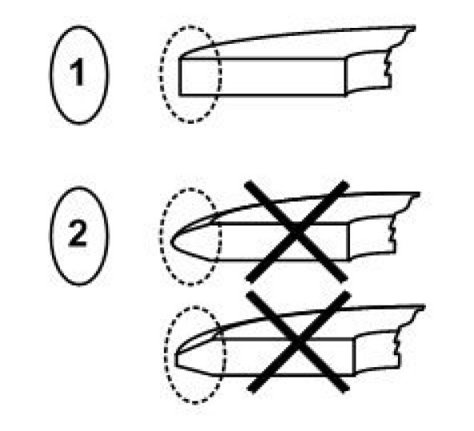
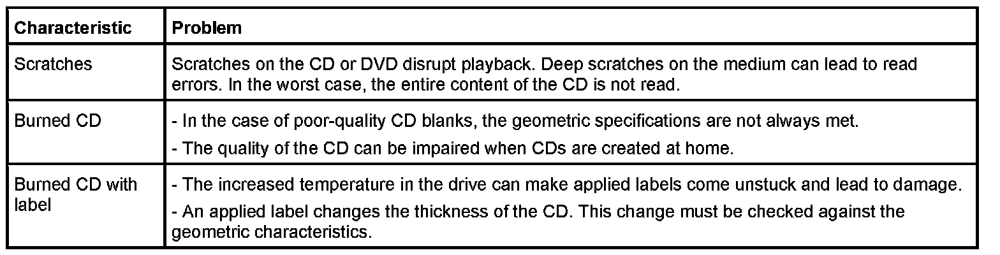

Specifications For the Geometric Characteristics of Cds and Dvds
Specifications for the geometric characteristics of CDs and DVDs
All CD or DVD drives in the vehicle may only be loaded with standardized CDs. CDs that do not conform to standard can damage the changer.
Shape of the CD
Only CDs that comply with the specifications for geometric characteristics may be inserted in the CD changer.

Only the CD shape shown above is permitted. In addition to this shape, the specified characteristics specified below must also be correct. The changer can only work without errors if the shape and geometric characteristics match the specifications.
Geometric characteristics Specification:
Shape: Round
Diameter (D1): 15 mm
Diameter (D2): 120 mm
CD thickness: 1.1 mm - 1.5 mom
The following graphic shows possible shapes that do not conform to the standard. These or similar shapes can damage the drive.

Border of the CD
The CD border should be rectangular. Deformed or defective borders are potential sources of error. Deformed or defective borders can mean that the CD is not drawn in or ejected properly.

CD border Characteristic:
1 Rectangular
2 Deformed, defective
Visual characteristics of CDs and DVDs
The visual characteristics of CDs and DVDs have to be checked alongside the geometric characteristics.
